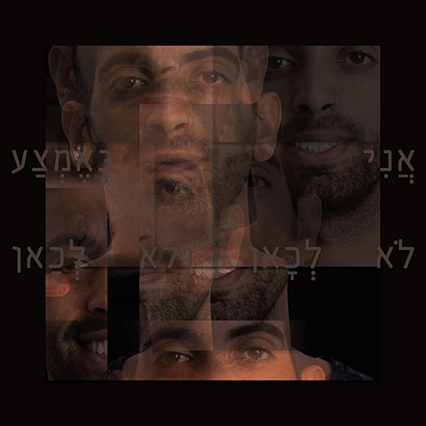

פורטרט עצמי
פרוייקט עיצוב דיוקן עצמי במסגרת הקורסים מבוא לתקשורת חזותית ומבוא לעיצוב גרפי
מה עומד מאחורי העבודה?
הפורטרט מורכב מקולאז' תמונות פנים שלי. בחלק מהתמונות הפרצוף מחייך ובחלקן רציני ואטום, זאת על מנת להציג את שני הצדדים הנמצאים בי. כמו כן, על גבי הפורטרט מופיע הציטוט "אני באמצע, לא לכאן ולא לכאן" הלקוח מתוך שירה של עדי קיסר "אני המזרחית" במטרה להציג זהות חלוקה נוספת.
